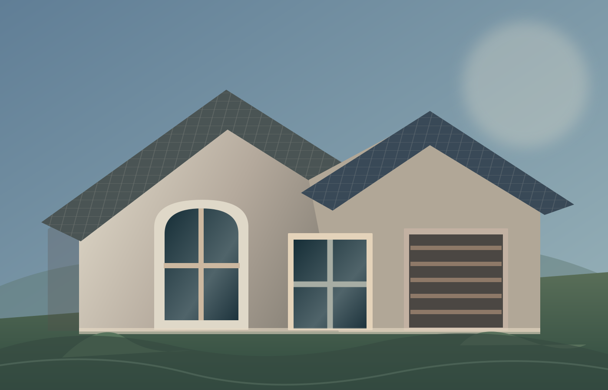
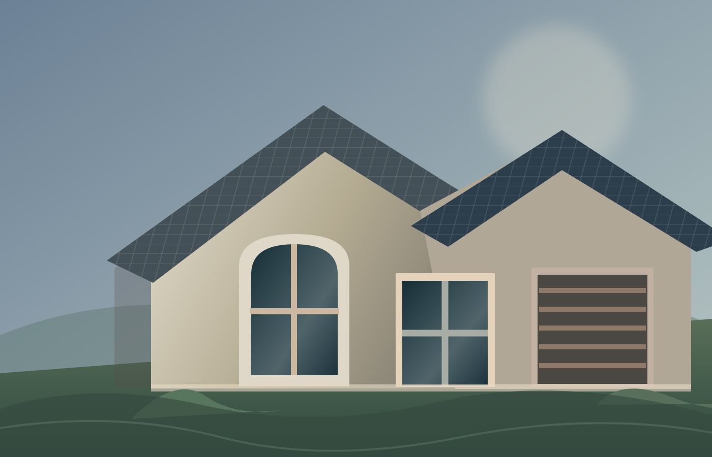
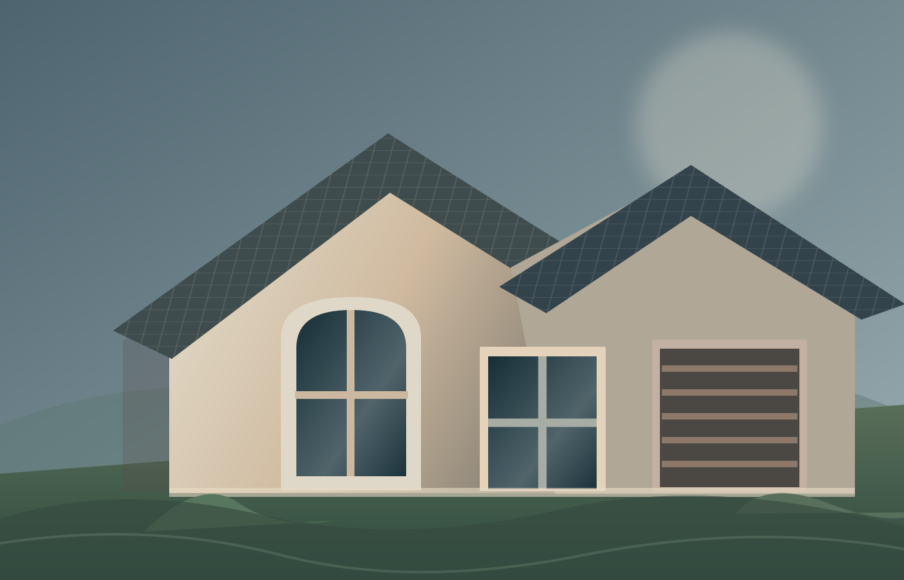
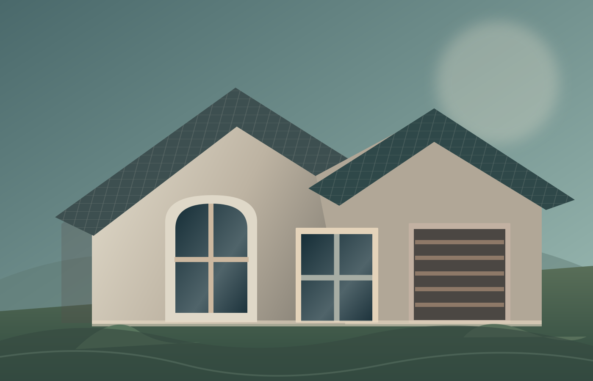
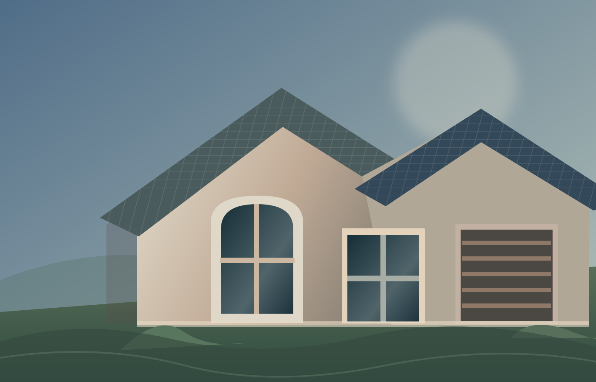

<!-- ATZ-SVC-001 / SERVICE BENTO 1+4. Adapted from Tri-Lane Home. 
     All copy is illustrative SOURCE EXAMPLE, not verified data for another business.
     Five custom SVG illustrations are conceptual artwork, not photos of client projects. -->
<section class="atz-svc" data-atz-id="ATZ-SVC-001" aria-labelledby="atz-svc-heading">
 <div class="atz-svc__wrap">
  <header class="atz-svc__heading">
   <span class="atz-svc__eyebrow">WHAT WE DO</span>
   <h2 id="atz-svc-heading">ROOFING EXPERTISE.<br>EXTERIOR SOLUTIONS<span class="atz-svc__dot">.</span></h2>
   <p>Explore our dedicated roofing and residential exterior capabilities.</p>
  </header>
  <div class="atz-svc__swipe-hint" aria-hidden="true"><span>SWIPE TO EXPLORE SERVICES</span> <span>→</span></div>
  <div class="atz-svc__grid" data-svc-rail tabindex="0" role="region" aria-label="Service cards. On mobile, use swipe or left and right arrow keys.">
   <article class="atz-svc__card atz-svc__feature" data-svc-card data-svc-index="0">
  
  <div class="atz-svc__shade" aria-hidden="true"></div>
  <div class="atz-svc__content atz-svc__feature-content">
    <span class="atz-svc__icon" aria-hidden="true"><svg viewBox="0 0 24 24"><path d="m3 10 9-7 9 7"/><path d="M5 9.5V21h14V9.5"/><path d="M9 21v-7h6v7"/></svg></span>
    <h3>Residential<br>Roofing</h3>
    <p>Roof installations and replacements following storm damage.</p>
    <ul class="atz-svc__checks"><li>New roof installations</li><li>Storm-damage roof replacement</li><li>Architectural shingles</li><li>Metal roofing</li><li>Slate roofing</li></ul>
    <a class="atz-svc__primary" href="#atz-svc-demo-roofing">Learn More About Roofing <span aria-hidden="true">→</span></a>
  </div>
</article>
   <div class="atz-svc__secondary">
   <article class="atz-svc__card" data-svc-card data-svc-index="1">
  
  <div class="atz-svc__shade" aria-hidden="true"></div>
  <div class="atz-svc__content">
    <span class="atz-svc__icon" aria-hidden="true"><svg viewBox="0 0 24 24"><rect x="3" y="4" width="18" height="16" rx="1.5"/><path d="M12 4v16M3 12h18"/></svg></span>
    <h3>Windows</h3>
    <p>Window installation and replacement for home comfort and curb appeal.</p>
    
    <a href="#atz-svc-demo-windows">Explore Service <span aria-hidden="true">→</span></a>
  </div>
</article>
   <article class="atz-svc__card" data-svc-card data-svc-index="2">
  
  <div class="atz-svc__shade" aria-hidden="true"></div>
  <div class="atz-svc__content">
    <span class="atz-svc__icon" aria-hidden="true"><svg viewBox="0 0 24 24"><path d="M3 21V8l9-5 9 5v13"/><path d="M5 21V10h14v11M5 14h14M5 18h14"/></svg></span>
    <h3>Garage Doors</h3>
    <p>Repair and replacement as part of storm-damage restoration.</p>
    
    <a href="#atz-svc-demo-garage">Explore Service <span aria-hidden="true">→</span></a>
  </div>
</article>
   <article class="atz-svc__card" data-svc-card data-svc-index="3">
  
  <div class="atz-svc__shade" aria-hidden="true"></div>
  <div class="atz-svc__content">
    <span class="atz-svc__icon" aria-hidden="true"><svg viewBox="0 0 24 24"><path d="M12 2c-4 6-7 10-7 14a7 7 0 0 0 14 0c0-4-3-8-7-14Z"/></svg></span>
    <h3>Gutters</h3>
    <p>Installation and repairs that support effective rainwater drainage.</p>
    
    <a href="#atz-svc-demo-gutters">Explore Service <span aria-hidden="true">→</span></a>
  </div>
</article>
   <article class="atz-svc__card" data-svc-card data-svc-index="4">
  
  <div class="atz-svc__shade" aria-hidden="true"></div>
  <div class="atz-svc__content">
    <span class="atz-svc__icon" aria-hidden="true"><svg viewBox="0 0 24 24"><rect x="3" y="3" width="14" height="6" rx="2"/><path d="M17 6h4v5h-9v4m0 0v6"/><path d="M10 21h4"/></svg></span>
    <h3>Paint &amp; Siding</h3>
    <p>Exterior painting and siding services for your home's exterior.</p>
    
    <a href="#atz-svc-demo-siding">Explore Service <span aria-hidden="true">→</span></a>
  </div>
</article>
   </div>
  </div>
  <p class="atz-svc__note">ATREZZO layout study: illustrative SVG architecture, example labels — not actual Tri-Lane projects or verified client content.</p>
  <div class="atz-svc__all"><a href="#atz-svc-demo-services">Explore All Services <span aria-hidden="true">→</span></a></div>
  <div class="atz-svc__sample-targets" id="atz-svc-demo-services" aria-label="Demonstration-only link destinations">
   <p>Component preview · Demonstration destinations only · Replace all copy and URLs when integrating</p>
   <div class="atz-svc__sample-list">
    <a id="atz-svc-demo-roofing" href="#atz-svc-heading">Residential Roofing · Return to section ↑</a>
    <a id="atz-svc-demo-windows" href="#atz-svc-heading">Windows · Return to section ↑</a>
    <a id="atz-svc-demo-garage" href="#atz-svc-heading">Garage Doors · Return to section ↑</a>
    <a id="atz-svc-demo-gutters" href="#atz-svc-heading">Gutters · Return to section ↑</a>
    <a id="atz-svc-demo-siding" href="#atz-svc-heading">Paint & Siding · Return to section ↑</a>
   </div>
  </div>
 </div>
</section>